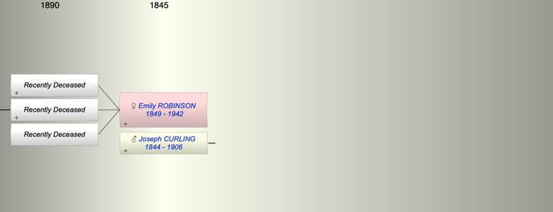

| [Index] |
| Emily Marian ROBINSON (1849 - 1942) |
|  |
| b. 23 Aug 1849 at Canada |
| +. Joseph James CURLING (1844 - 1906) |
| d. 1942 aged 93 |
| Children (3): |
| Grandchildren (2): |
| Bryan Wlliam Richard CURLING, Diana Mary CURLING |
| Events in Emily Marian ROBINSON (1849 - 1942)'s life | |||||
| Date | Age | Event | Place | Notes | Src |
| 23 Aug 1849 | Emily Marian ROBINSON was born | Canada | ex 1939 Register | ||
| 18 Nov 1906 | 57 | Death of husband Joseph James CURLING (aged 62) | Dachet, Bucks | Note 1 | |
| 1942 | 93 | Emily Marian ROBINSON died | |||
| Personal Notes: |
| 1939 living 27 Horton Street, Kensington, London with her single daughter Selina H |
| Created on a Mac™ using iFamily for Mac™ on 8 Oct 2023 |